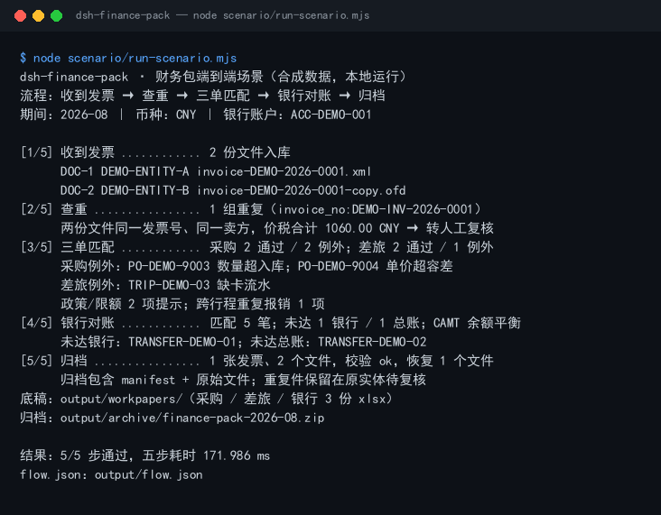

真实运行截图

上图是 node scenario/run-scenario.mjs 的真实输出，不是示意图（原始终端文本）。数据全部为 DEMO-* / 91330106TEST* 合成值。
这个包解决什么
一张发票从“收到”到“归档”的五个动作，由四个插件接力；脚本把同一份 2026-08 数据在四个插件之间传递，而不是四个样例各跑一遍。
它不替你做会计判断，也不做税务签章。匹配例外、政策违规和未达账项仍需人工复核。
你需要准备什么
把文件放进仓库 04-build/dsh-finance-pack/scenario/data/ 对应目录，保持表头不变。
| 文件 | 放在哪里 | 最少需要的列 / 字段 |
|---|---|---|
| 电子发票 XML 或 OFD | invoice/ | XML：InvoiceNo、InvoiceIssueDate、Buyer、Seller、Items、Amount、TaxAmount、TotalAmount |
| 采购发票 / 采购单 / 收货单 | ap/ | supplier,invoice_no,po_no,line_no,qty,unit_price,amount；PO/GRN 见样例表头 |
| 差旅行程 / 发票 / 卡流水 | travel/ | 行程 trip_id,employee,origin,destination,date,amount；发票 invoice_id,trip_id,amount；卡 txn_id,trip_id,amount |
| 银行流水 / 总账 / CAMT.053 | bank/ | CSV date,amount,reference；CAMT 标准 BkToCstmrStmt/Stmt |
金额写 1234.56，日期 YYYY-MM-DD，期间 YYYY-MM；银行流水和总账金额符号要一致，付款记为负数。
四步操作
先运行同一条命令（脚本一次跑完）：
$ cd 04-build/dsh-finance-pack $ node scenario/run-scenario.mjs
屏幕上是 [1/5]～[5/5] 五段；下面四步里，收票和查重各占一段。
第 1 步：收票 + 查重（dsh-einvoice）
对应 [1/5]、[2/5] 两段
[1/5] 收到发票 ............ 2 份文件入库
DOC-1 DEMO-ENTITY-A invoice-DEMO-2026-0001.xml
DOC-2 DEMO-ENTITY-B invoice-DEMO-2026-0001-copy.ofd
[2/5] 查重 ................ 1 组重复（invoice_no:DEMO-INV-2026-0001）
两份文件同一发票号、同一卖方，价税合计 1060.00 CNY → 转人工复核
2 份文件都入库（XML + OFD），同一张发票分别落在两个主体；查重命中 1 组，脚本不会自动删除任何一份。同一主体重复解析会报 E_INV_DUP_CONFLICT，说明查重生效。
第 2 步：三单匹配（dsh-ap-three-way + dsh-travel-recon）
对应 [3/5] 段；采购与差旅两条线
[3/5] 三单匹配 ............ 采购 2 通过 / 2 例外；差旅 2 通过 / 1 例外
采购例外：PO-DEMO-9003 数量超入库；PO-DEMO-9004 单价超容差
差旅例外：TRIP-DEMO-03 缺卡流水
政策/限额 2 项提示；跨行程重复报销 1 项
采购线：9001（XML 发票）和 9002 通过；9003 数量超过收货单，9004 单价超出 1% 默认容差。差旅线：TRIP-DEMO-01/02 通过；TRIP-DEMO-03 缺卡流水，另有 1 项超政策、1 天超日限额、1 张发票跨两个行程重复报销。
第 3 步：银行对账（dsh-bankrec）
对应 [4/5] 段
[4/5] 银行对账 ............ 匹配 5 笔；未达 1 银行 / 1 总账；CAMT 余额平衡
未达银行：TRANSFER-DEMO-01；未达总账：TRANSFER-DEMO-02
银行 6 行、总账 6 行，按金额相同且日期相差 ≤3 天勾对，成功 5 笔。两笔转账金额相同但日期相差较远，分别留在银行侧和总账侧。CAMT.053 期初 10000.00 + 净发生额 −4254.90 = 期末 5745.10，余额连续。
第 4 步：归档（dsh-einvoice）
对应 [5/5] 段
[5/5] 归档 ................ 1 张发票、2 个文件，校验 ok，恢复 1 个文件
归档包含 manifest + 原始文件；重复件保留在原实体待复核
底稿：output/workpapers/（采购 / 差旅 / 银行 3 份 xlsx）
归档：output/archive/finance-pack-2026-08.zip
只归档 DEMO-ENTITY-A 下 2026-08 的 1 张发票；归档包 = 1 个原始 XML + 1 个 manifest。归档后用 invoice.check 校验哈希，再用 invoice.restore 做恢复演练。DEMO-ENTITY-B 的重复件不进入归档包。
结果文件
| 路径 | 内容 |
|---|---|
output/flow.json | 本次运行的完整链路：每步输入、输出摘要、耗时、状态、产物清单 |
expected/flow.json | 金标；测试剔除时间字段后逐字段比对 |
output/workpapers/ap-three-way.xlsx | 采购三单底稿：Matches / Exceptions |
output/workpapers/travel-ledger.xlsx | 差旅底稿：Trips / Matches |
output/workpapers/bank-rec.xlsx | 银行对账底稿：Bank / GL / Matches |
output/archive/finance-pack-2026-08.zip | 归档包（原始文件 + manifest） |
output/restored/ | 恢复演练还原出的原始文件 |
output/ 每次运行重建，已在 .gitignore 中忽略；金标在 expected/flow.json，不要被覆盖。
出错怎么办
| 报错 | 通常原因 | 下一步 |
|---|---|---|
E_INV_FILE_UNREADABLE / E_INV_OFD_UNSUPPORTED | 文件为空、损坏，或 OFD 中没有可识别的发票 XML | 重新从开票平台导出；确认 OFD 能正常打开 |
E_INV_XML_SCHEMA_DRIFT / E_INV_FIELD_MISSING | XML 字段名与样例不同，或缺必填字段 | 对照样例补齐发票号、日期、买卖方、Items 和金额 |
E_INV_DUP_CONFLICT | 同一主体、同一发票号已解析过 | 查重生效；先查已有记录，或换 entity_id 做主体隔离，不要删数据 |
E_AP_CSV_INVALID | CSV 缺表头、金额读不懂、空行/坏行 | 对照 ap 样例表头；金额改成 1234.56 |
E_BR_CSV_INVALID | 日期/金额/期间格式不对，或 CAMT 缺余额 | CSV 用 YYYY-MM-DD；期间用 YYYY-MM；CAMT 至少要有 OPBD 和 CLBD |
E_TRAVEL_CSV_INVALID | 缺 trip_id / invoice_id / txn_id，或金额格式不对 | 对照 travel 样例，每个 ID 必填 |
| 其他错误 | 可能是文件权限、临时目录或数据版本变化 | 保留完整报错和 output/flow.json，先读错误里的“下一步”，不要删原始文件 |
四个插件
仓库内完整中文说明：04-build/dsh-finance-pack/README-zh.md；英文简版：README.md。运行与测试命令：
$ node scenario/run-scenario.mjs $ node --test test/*.test.mjs $ node scenario/run-scenario.mjs --write-expected # 有意改动输出后重建金标